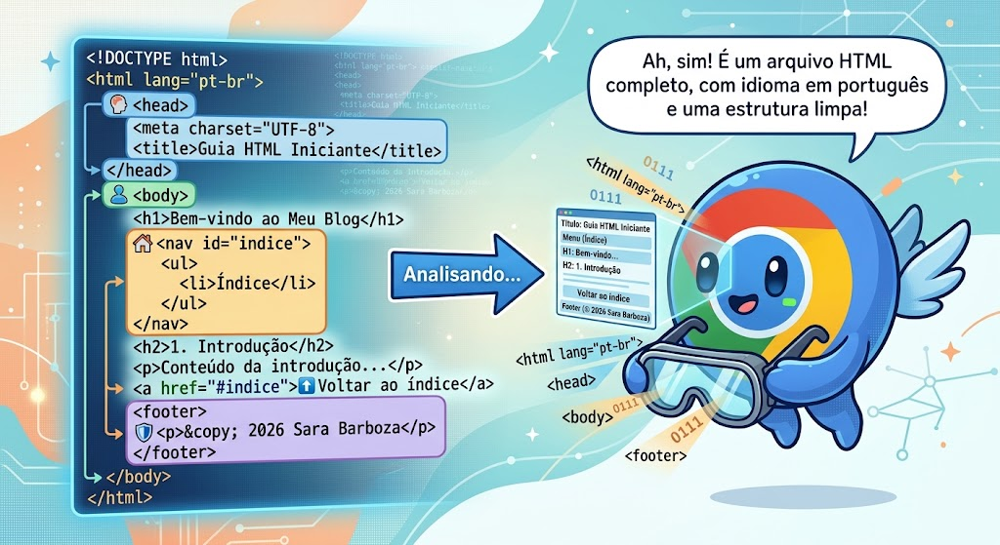

A Primeira Explosão de Código: Meus Primeiros Passos no HTML
O big
Nas primeiras aulas do curso, aprendi sobre a história da internet e conheci alguns dos grandes nomes que, décadas atrás, fizeram tudo isso acontecer. Foram anos de pesquisa, testes e muito trabalho para que hoje a gente possa carregar um verdadeiro computador no bolso e achar que isso sempre existiu.
Mesmo que ainda não estejamos andando em carros voadores, como eu imaginava quando era criança que aconteceria por volta de 2017, a tecnologia evoluiu de formas impressionantes. Tenho certeza de que, se você contasse para uma mãe de 2002 que existiria um robô capaz de aspirar a casa e ainda passar pano sozinho, ela provavelmente acharia que você estava inventando uma história de ficção científica.
Uma das partes que mais gostei nas primeiras aulas foi assistir ao vídeo em que Steve Jobs apresenta o primeiro iPhone. Na época, aquilo era simplesmente revolucionário. Hoje, todo ano é lançado um "novo" iPhone, e isso sempre me faz refletir sobre como nossa percepção da tecnologia mudou. Antigamente, as empresas disputavam para criar celulares cada vez mais inovadores. Hoje, muitas vezes comemoramos apenas uma nova numeração, um design quase igual ao anterior e pequenas melhorias. Sim, eu sei que o iPhone possui um sistema extremamente potente, mas até hoje muita gente brinca com a duração da bateria.
O mais interessante para mim é pensar que aquele aparelho, apresentado anos atrás, representava o auge da tecnologia dos smartphones. Ele não surgiu do nada. Antes dele existiram inúmeras pesquisas, estudos, tentativas, erros e pessoas que dedicaram suas vidas para transformar uma ideia em realidade. É justamente esse começo que desperta a minha curiosidade.
Essa é, inclusive, uma das razões pelas quais estou estudando programação novamente. Depois de três tentativas frustradas — porque eu estava ansiosa para aprender tudo de uma vez — resolvi começar pela quarta vez, mas agora com mais calma, respeitando meu tempo e construindo uma base sólida.
Sempre me considerei uma pessoa criativa, mas também reconheço que o universo da programação é desafiador para mim. Às vezes parece que alguns conceitos simplesmente não entram na minha cabeça, mesmo me considerando uma pessoa que aprende rapidamente. Por isso, decidi seguir pelo desenvolvimento Front-end, uma área com a qual me identifico mais. Além disso, quando era adolescente passei horas personalizando blogs no Blogspot, então acredito que essa familiaridade pode me ajudar nessa nova jornada.
E foi justamente por onde tudo começa que iniciei meus estudos: o HTML.
Ao longo deste primeiro texto, quero compartilhar o que aprendi nas primeiras aulas.
HTML significa HyperText Markup Language (Linguagem de Marcação de Hipertexto). E, infelizmente para quem está começando a estudar programação (como eu), apesar do nome parecer algo super complexo, HTML não é uma linguagem de programação.
Na prática, o HTML é uma linguagem de marcação usada para estruturar o conteúdo de uma página da web. É através dele que informamos ao navegador o que é um título, um parágrafo, uma imagem, um botão ou um link. Depois, navegadores como Chrome, Firefox, Edge, Opera e tantos outros interpretam essas marcações e transformam aquele monte de código na página que vemos na tela.
É por isso que praticamente todo site da internet possui HTML. Independentemente da linguagem utilizada nos bastidores, em algum momento o navegador recebe um documento HTML para exibir o conteúdo ao usuário.
Existe muito material gratuito na internet contando toda a história do HTML e sua evolução, mas ainda estou no começo dos estudos e não decorei todos esses detalhes. Então, neste post, vou compartilhar aquilo que já aprendi utilizando o Visual Studio Code.
O que é uma tag?
Voltar ao índice
Uma das primeiras coisas que aprendemos em HTML são as tags. Elas são os elementos que indicam ao navegador como cada parte da página deve ser interpretada.
Um exemplo simples é a tag de título:
<h1></h1>
Nesse exemplo, temos uma tag de abertura (<h1>) e uma tag de fechamento (</h1>). Entre elas é onde escrevemos o conteúdo que será exibido na página.
A maioria das tags funciona exatamente dessa forma: uma abertura, um conteúdo e um fechamento.
Mais adiante, você também encontrará algumas tags que não possuem fechamento, porque elas executam uma única função e não precisam envolver nenhum conteúdo. Um exemplo é a tag <br>, que serve apenas para inserir uma quebra de linha, ou a tag <img>, utilizada para exibir uma imagem.
No começo pode parecer estranho, mas, conforme você pratica, começa a perceber que o HTML é muito mais uma forma de organizar e descrever informações do que de "programar" propriamente dito.
E, sinceramente, acho isso um ótimo ponto de partida para quem está entrando no mundo do desenvolvimento web.
Vou fazer uma demonstração de como algumas tags se comportam e para quê são usadas:
<strong> = Deixa o <strong> em negrito</strong> e indica ao navegador que aquela palavra ou trecho tem grande importância para o conteúdo da página.
<mark> = <mark>Destaca ou marca parte do texto</mark> como se você estivesse passando um marca-texto.
<abbr> = Essa tag indica que o texto é uma abreviação/sigla, como <abbr>HTML</abbr>, e nela podemos até atribuir um "title" para descrever o significado ao colocar o mouse sobre ela.
<small> = Deixa o texto em menor tamanho e indica ao navegador que <small>aquela palavra ou trecho tem menor importância</small> para o conteúdo da página.
<sub> = Deixa o <sub>texto em subscrito</sub> e é mais utilizado para fórmulas químicas ou indíces, por exemplo: h2O
<sup> = Deixa o <sup>texto em sobrescrito</sup> e é mais utilizado para fórmulas matemáticas; expoente, potências e algumas referências, por exemplo: x2 ou 1a
<font> = Essa era usada para alterar características do texto, como tamanho, cor e tipo de fonte diretamento no html, porém, no html5 ela se tornou obsoleta, pois, essa estilização deve ser feita com CSS.
<del> = Deixa o <del>texto excluído</del> e é mais utilizado para indicar que um trecho de texto foi removido ou substituído.
O esqueleto do arquivo html
Voltar ao índice
Eu pedi para o Gemini criar uma imagem para você visulizar melhor a estrutura do HTML.

Fonte: Imagem criada com auxilio de IA para ilustrar a estrutura do HTML (2026)
O HTML possui uma estrutura básica que precisamos seguir para criar uma página. Podemos imaginar essa estrutura como uma casa: cada parte tem uma função diferente, mas todas trabalham juntas.
Ela começa assim:
<html>
<head>
<body>
A tag <html> é como se fosse a casa inteira. Tudo o que faz parte da nossa página fica dentro dela.
Quando o navegador encontra essa tag, é como se ele pensasse:
"Ah, entendi! Isso aqui é um arquivo HTML. Agora vou começar a ler o que está dentro dele."
No final da página temos a tag </html>, que indica que o documento HTML terminou.
<head>
A tag <head> é como se fossem os bastidores da nossa página.
É nessa parte que colocamos informações e configurações que ajudam o navegador a entender como a página deve funcionar. Essas informações geralmente não aparecem diretamente para o usuário.
Por exemplo, podemos definir o idioma da página, a forma como os caracteres devem ser interpretados e outras configurações importantes.
Também é dentro do <head> que colocamos a tag <title>.
Sabe aquele nome que aparece na aba do navegador quando você abre um site? É a tag <title> que define esse nome.
<body>
Se o <head> são os bastidores, o <body> é o palco.
É dentro do <body> que colocamos tudo aquilo que queremos mostrar para quem está visitando o site.
Podemos colocar textos, títulos, imagens, links, vídeos, botões e vários outros elementos.
Resumindo
Podemos pensar na estrutura HTML assim:
<html> → é a página inteira.
<head> → guarda informações e configurações que ajudam o navegador a entender a página.
<body> → contém tudo aquilo que o usuário consegue ver na página.
É como construir uma casa: primeiro fazemos a estrutura e depois começamos a colocar tudo dentro dela. No HTML, a lógica é parecida.
Eu também aprendi outras coisas, como instalar e configurar o VS Code. Já explorei bastante a ferramenta, mas não vou entrar em detalhes aqui porque existem ótimos tutoriais no YouTube que ensinam isso de forma prática.
Além disso, entendi como funciona a relação entre o Git e o GitHub e aprendi os comandos básicos para utilizá-los em conjunto. Esse será o próximo assunto que vou abordar aqui no blog.